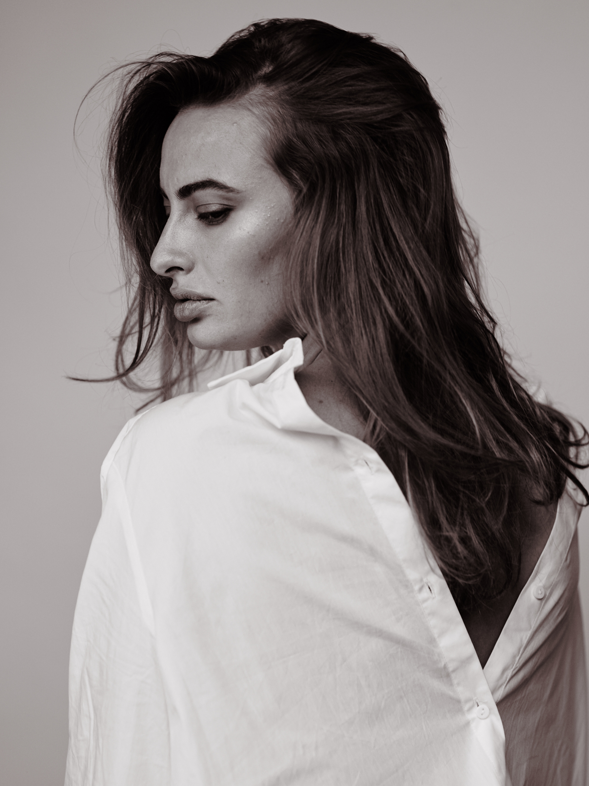

profile
ABOUT ME
I am a 29 year old multimedia design student living in Copenhagen. For several years I have lived abroad, so it was only natural to choose the international line at KEA. I also work as a project manager for a translation company. Here I coordinate the translations with the client and the various translators. My spare time is spent with my pet dog Stella, taking walks at Assistentens Cemetary. I also like to work out, cook food and chill with a film.
